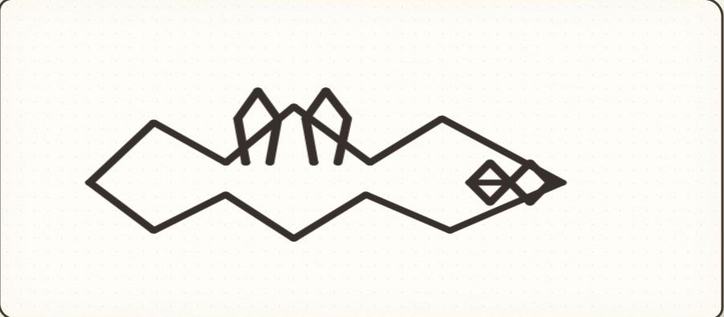

FIXED PLAYER DRAWING
904×396 JPEG · 세 회차에서 바뀌지 않음
RECORDED OPENAI OUTPUT · 2026-07-24
같은 잠긴 부탁과 같은 그림을 세 번 읽은 실제 API 결과
FIXED PLAYER DRAWING
904×396 JPEG · 세 회차에서 바뀌지 않음
RUN 01
긴 윤곽 → stretch · glide
가운데 봉우리 → rhythm · signal
교차 마름모 → connect
소소 · “긴 쉼… 세 번. 세 번 모두, 마지막 박자까지 건넜어.”
다리 · “하나, 둘, 셋. 마지막 자리까지 닿았네.”
RUN 02
넓은 외곽 → stretch · glide · bridge
가운데 갈래 → grip · climb
겹친 마름모 → connect · grip
소소 · “긴 쉼… 세 번은 닿았어. 마지막 한 번이, 저 마름모 너머에서 멈췄네.”
다리 · “한 칸 닿고, 다음 칸은 아직 비었어.”
RUN 03
좌우 날개 → glide · stretch
가운데 고리 → grip
겹마름모 → connect · signal
소소 · “마름날개가 길을 폈어… 세 번째 박자, 또렷이 도착했어.”
다리 · “하나, 둘, 셋. 마지막도 건넜다.”